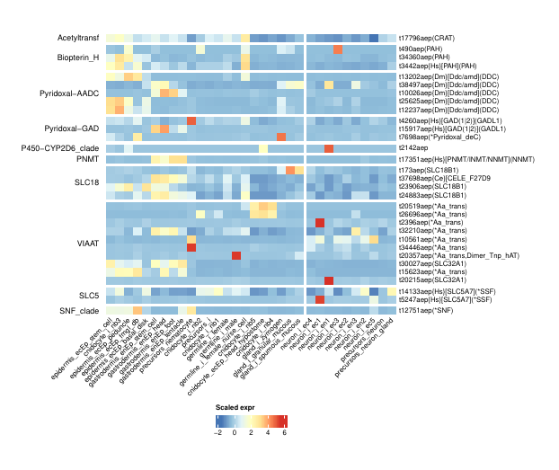
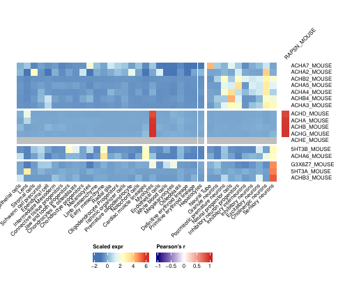
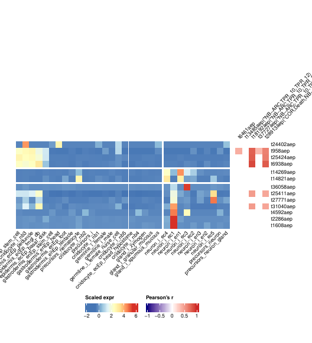
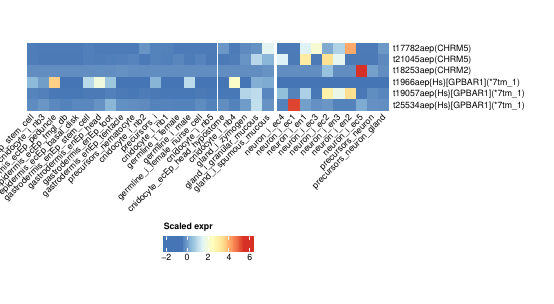
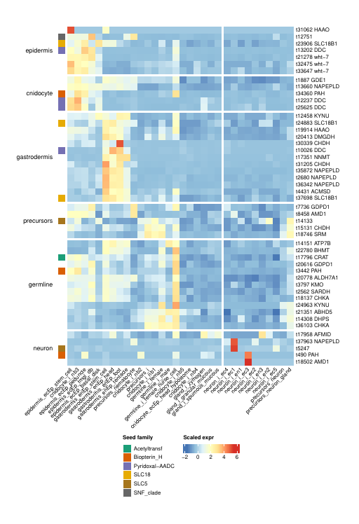
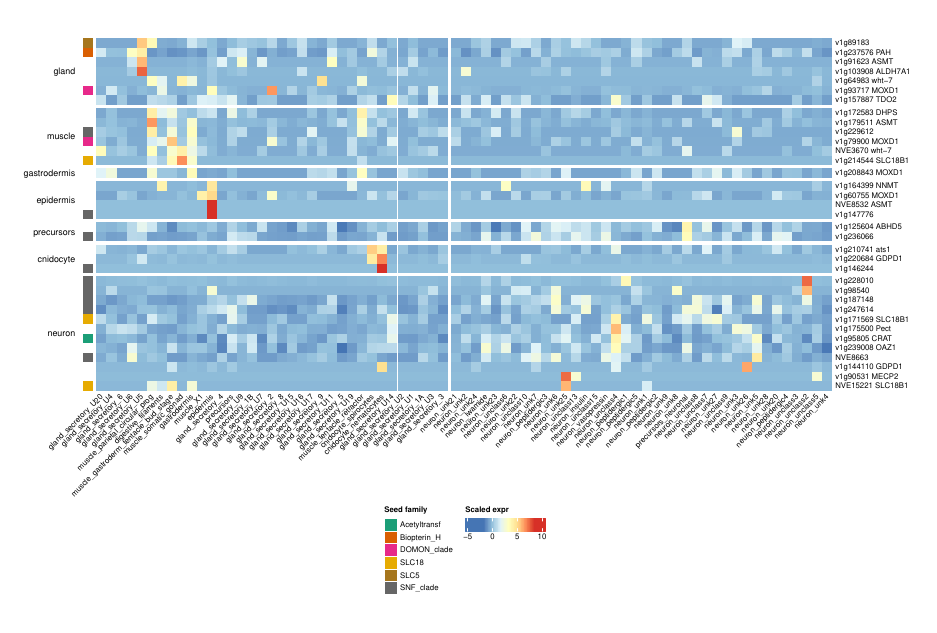
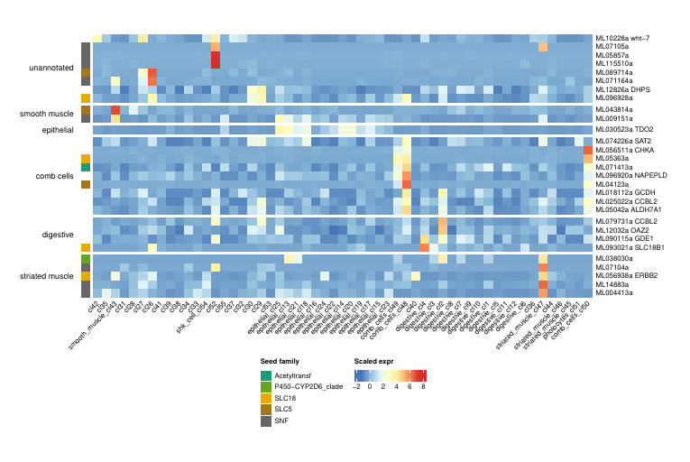
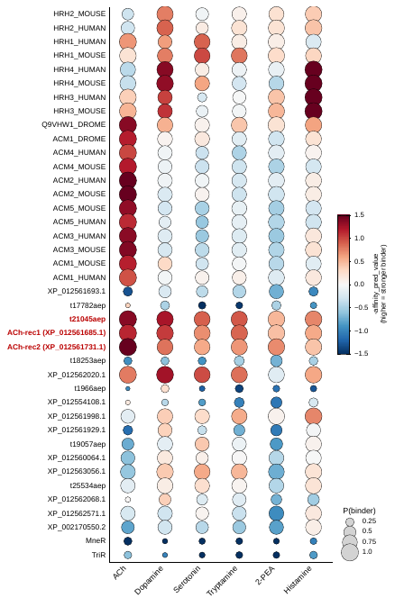
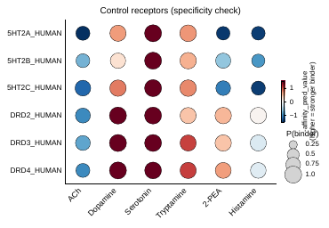

From promiscuity to specialization: the origin of biogenic amine signaling is pre-bilaterian
Pittis, Yañez-Guerra, Ruperti, Musser, Cole, Marinković, Thiel, Huerta-Cepas, Technau, Jékely, Arendt — walkthrough of the computational analyses in the neurotransevo repository.
The paper asks whether the machinery that makes, packages and receives acetylcholine and monoamines predates bilaterian animals. The computational evidence comes from four analyses: gene-family phylogenies (who has which enzyme, transporter or receptor), single-cell expression (where those genes are expressed and which genes are co-expressed with them), and structure-based binding predictions for candidate cnidarian receptors. Metabolomics and immunohistochemistry (Figs 1, 6) are experimental and not part of this repository.
| Analysis | Figures | Code |
|---|---|---|
| Gene-family phylogenies | 2, 3, 4A–B, 5A–B, S1–S2 | scripts/phylogeny_pipeline.sh, python/phylogenies/ |
| Cell-type expression matrices | all expression panels | R/matrices.R, scripts/01_build_matrices.R |
| Gene-family expression heatmaps | 4D–E, 5C–D, 7, S4–S10 | R/heatmaps.R, scripts/04_plot_family_heatmaps.R |
| Amine-metabolism coregulons | 8A–C, S11–S13 | R/coregulons.R, scripts/02_compute_coregulons.R, scripts/03_plot_coregulons.R |
| Boltz-2 binding predictions | 4B, S14; Table S4 | python/boltz/ |
Data
Protein datasets of 68 eukaryotic species (Table S2) plus UniProt prokaryotic reference proteomes; six public single-cell atlases; eggNOG-mapper v2.1.7 functional annotations; Boltz-2 predictions computed for this study. Download instructions: data/README.md.
| Species | Single-cell atlas | Cell types used | n |
|---|---|---|---|
| Mus musculus | Cao et al. 2019 (organogenesis) | main cell types | 37 |
| Drosophila melanogaster | Fly Cell Atlas, 10x body | fine annotation (artefacts removed) | 33 |
| Hydra vulgaris | Siebert et al. 2019 UMI matrix | cell types of Levy et al. 2021 | 32 |
| Nematostella vectensis | adult MARS-seq atlas | cell types of Levy et al. 2021 | 73 |
| Mnemiopsis leidyi | Sebé-Pedrós et al. 2018 | metacell annotation | 55 |
| Spongilla lacustris | Musser et al. 2021 | cell types of Table 1 | 23 |
1 · Gene-family phylogenies Figs 2–5, S1–S2 · Table S5
For each gene involved in biosynthesis, vesicular transport, reuptake or reception of a transmitter, the Pfam family of its product was searched across all proteomes. Presence, absence and orthology of the bilaterian specialists (ChAT, TH, TPH, VAChT, VMAT, mAChRs, nAChR subunits) are read from these trees.
Workflow
- Homolog search:
hmmsearch --cut_ga(HMMER 3.3.2) against eukaryotic and prokaryotic proteomes; above 300 prokaryotic hits, at most 100 per bacterial or archaeal phylum were kept. - Superfamilies (MFS, rhodopsin GPCRs): all-vs-all BLASTP (E ≤ 1e-5), MCL clustering (inflation 1.4 and 6.0); the clusters containing the families of interest were analysed (SLC18 = MFS cluster 0005, SLC22 = cluster 0001; GPCR-A cluster 0002).
- Family tree: alignment method chosen case by case (MAFFT L-INS-i/E-INS-i/FFT-NS-2 or Clustal Omega), gappy columns removed (>90% or, for large sets, >99% gaps), tree with FastTree (
-lg) or, for smaller families, IQ-TREE. - Clade of interest: extracted from the family tree, re-aligned (L-INS-i/E-INS-i), recomputed with IQ-TREE 1.6.12 (ModelFinder over LG models, ultrafast bootstrap).
# family tree (large set) clustalo -i family.fasta -o family.clustalo python python/phylogenies/filter_gappy_columns.py family.clustalo 0.99 > family.clustalo.gt001 FastTree -lg family.clustalo.gt001 > family.clustalo.gt001.fasttree # clade of interest linsi clade.fasta > clade.linsi python python/phylogenies/filter_gappy_columns.py clade.linsi 0.9 > clade.linsi.gt01 iqtree -s clade.linsi.gt01 -m MFP -mset LG -bb 1000 -nt AUTO
Trees and alignments (Table S5)
Every tree was linked to its alignment by content (identical sequence sets) and to its IQ-TREE report; sequence counts equal tree leaves in all cases. Files are deposited under the numbered names below.
| ID | Fig. | Family | Tree | Seqs | Columns | Alignment | Tree method | Model |
|---|---|---|---|---|---|---|---|---|
| 01 | 2B | carnitine acyltransferases | family | 506 | 867 | L-INS-i, >90% | IQ-TREE | LG+F+R9 |
| 02 | 2B, S2 | carnitine acyltransferases | ChAT/CrAT clade | 169 | 1590 | L-INS-i, >90% | IQ-TREE | LG+F+R7 |
| 03 | 2C | biopterin hydroxylases | family | 559 | 5386 | FFT-NS-2, none | FastTree | LG |
| 04 | 2C | biopterin hydroxylases | AAAH clade | 179 | 538 | L-INS-i, >90% | IQ-TREE | LG+R7 |
| 05 | 2D | PLP decarboxylases | family | 2195 | 9530 | FFT-NS-2, none | FastTree | LG |
| 06 | 2D | PLP decarboxylases | AADC clade | 194 | 583 | L-INS-i, >90% | IQ-TREE | LG+R8 |
| 07 | 2D | PLP decarboxylases | GAD clade | 373 | 2068 | L-INS-i, >90% | IQ-TREE | LG+R10 |
| 08 | 2E | DOMON monooxygenases | family | 670 | 5609 | L-INS-i, >90% | IQ-TREE | LG+R9 |
| 09 | 2E | DOMON monooxygenases | DBH/MOXD clade | 236 | 3394 | L-INS-i, >90% | IQ-TREE | LG+R8 |
| 10 | 3A | MFS superfamily | family | 8784 | 1130 | FFT-NS-2, >90% | FastTree | LG |
| 11 | 3A | MFS superfamily | SLC18 (cluster 0005) | 404 | 662 | L-INS-i, >90% | IQ-TREE | LG+F+R9 |
| 12 | 3A | MFS superfamily | SLC22 (cluster 0001) | 1441 | 890 | Clustal Omega, >90% | FastTree | LG |
| 13 | 3A | MFS superfamily | SLC22 subset | 440 | 756 | E-INS-i, >90% | IQ-TREE | LG+F+R8 |
| 14 | 3B | SSF transporters | family | 5704 | 17894 | FFT-NS-2, none | FastTree | LG |
| 15 | 3B | SSF transporters | ChT clade | 221 | 628 | L-INS-i, >90% | IQ-TREE | LG+R9 |
| 16 | 4A | rhodopsin GPCRs | MCL cluster 0002 | 3173 | 607 | FFT-NS-2, >90% | FastTree | LG |
| 17 | 4A | rhodopsin GPCRs | 4–10 TM filtered | 2657 | 3271 | Clustal Omega, >99% | FastTree | LG |
| 18 | 4A | rhodopsin GPCRs | H-ACh-monoamine clade (Fig. 4B is a species-trimmed schematic of its mAChR subclade) | 1092 | 2650 | Clustal Omega, >99% | IQ-TREE | LG+F+R10 |
| 19 | 5A | Cys-loop LGICs | family | 2538 | 840 | Clustal Omega, >90% | FastTree | LG |
| 20 | 5B | Cys-loop LGICs | cationic clade subset | 212 | 593 | E-INS-i, >90% | IQ-TREE | LG+F+R10 |
| 21 | S1A | NNMT/PNMT/TEMT | family | 290 | 1224 | L-INS-i, >90% | IQ-TREE | LG+R7 |
| 22 | S1B | cytochrome P450 | family | 4935 | 3097 | Clustal Omega, >99% | FastTree | LG |
| 23 | S1B | cytochrome P450 | CYP2 clade subset | 131 | 540 | E-INS-i, >90% | IQ-TREE | LG+F+R6 |
The complete table, including original and deposited file names, is data/phylogenies/Table_S5.phylogenies.tsv; the deposit is built by python/phylogenies/build_deposit.py.
2 · Cell-type expression matrices
For every atlas, UMI counts are summed per annotated cell type and divided by the number of cells of that type. The same six matrices feed every expression figure and the coregulon analysis; rebuilt from the public data they are identical to the ones used for the figures.
cell_type_means <- function(mat, cell_types) {
cls <- c_factor(cell_types) # locale-independent level order
normalise_by_clusters(aggregate_cols(mat, cls), cls)
}
3 · Gene-family expression heatmaps Figs 4D–E, 5C–D, 7, S4–S10
Rows are the curated members of a family (data/families/), scaled across cell types. All heatmaps of a species share one column order: complete-linkage clustering on 1 − Pearson r of the whole transcriptome, with neuronal cell types moved to a right-hand block. Hand-curated phylogeny row orders used in Figs 5C, 5D and S4 are stored in data/families/row_orders/. Figs 5C–D add the Pearson correlation (p ≤ 0.05) of each nAChR subunit with Rapsyn-related genes.
cell_type_order <- function(mat) {
hc <- hclust(as.dist(1 - cor(as.matrix(mat))), method = "complete")
o <- labels(rev(as.dendrogram(hc)))
c(o[neuron_split(o) == "O"], o[neuron_split(o) == "N"]) # neurons on the right
}




4 · Amine-metabolism coregulons Figs 8A–C, S11–S13
Which genes are co-expressed, across cell types, with the enzymes and transporters of amine metabolism? Seeds are the members of eight families (Acetyltransf, Biopterin_H, Pyridoxal-AADC, DOMON, P450-CYP2D6, SLC18, SLC5, SNF).
Criterion
config.yml.pass <- (r >= cc$r_min) & (padj <= cc$padj_max)
active <- Filter(function(s) sum(pass[setdiff(rownames(pass), s), s]) >= 1,
intersect(colnames(pass), rownames(pass)))
members <- union(intersect(rownames(r)[rowSums(pass[, active, drop = FALSE]) >= 1], go_ids), active)
In the heatmaps, genes are grouped by the cell-type class in which their expression peaks (white gaps) and clustered within each group; the left bar marks seed genes by family.
Results
| Species | Cell types | Seeds (active) | Genes | Figure |
|---|---|---|---|---|
| Hydra | 32 | 18 (14) | 48 | 8A |
| Nematostella | 73 | 37 (17) | 35 | 8B |
| Mnemiopsis | 55 | 27 (17) | 29 | 8C |
| Spongilla | 23 | 20 (13) | 32 | S11 |
| Mouse | 37 | 78 (54) | 100 | S12 |
| Drosophila | 33 | 31 (26) | 48 | S13 |
Interpretation. Beyond the expected core (AADC and PAH paralogs, CRAT, choline-handling enzymes, SLC18B1/VPAT, white/ABCG transporters), the coregulons recover the kynurenine pathway (most completely in Spongilla), NAPE-PLD/GDPD1/GDE1 in Hydra, ASMT paralogs in Nematostella and an expanded MOXD1 repertoire in Spongilla, which lacks neurons. In the bilaterians, the same neighbourhoods are occupied by the substrate-specific duplicates (TPH1, NET, VMAT1 in mouse; Tβh, Tdc2, Trh, ChAT, VAChT in Drosophila).



5 · Boltz-2 binding predictions Fig. 4B, S14 · Table S4
46 receptors — bilaterian muscarinic, histamine, serotonin and dopamine receptors of known specificity, Hydra mAChR-clade receptors, and a ctenophore and a placozoan receptor — were each predicted in complex with acetylcholine, dopamine, serotonin, tryptamine, 2-phenylethylamine and histamine (Boltz 2.2.1, default settings, MSAs from the ColabFold server). Affinity and binder probability are the means of the two affinity heads.
python python/boltz/extract_affinities.py Output/ --inputs Input/YAMLs > data/boltz2/boltz_predictions_full.csv python python/boltz/make_table.py data/boltz2/boltz_predictions_full.csv results/tables/Table_S4_boltz2_predictions.xlsx python python/boltz/plot_panels.py
| Receptors | Top-ranked ligand | P(binder), top ligand |
|---|---|---|
| Human, mouse and fly mAChRs | acetylcholine | 0.983–0.998 |
| HRH2–4 (human, mouse) | histamine | 0.905–0.990 |
| 5HT2A–C / DRD2–4 | serotonin / dopamine | 0.993–0.998 |
| Hydra ACh-rec1, ACh-rec2, t21045aep (conserved orthosteric site) | acetylcholine | 0.997–0.998 |
| Hydra receptors with orthosteric substitutions | mixed | ACh 0.55–0.74 |
| MneR (ctenophore), TriR (placozoan) | none | ≤ 0.23 |
Interpretation. The controls recover their known ligands (HRH1 is the exception), which supports reading the Hydra predictions: the two receptors with a fully conserved orthosteric site, and the matching transcript, are predicted to bind acetylcholine as strongly as bilaterian mAChRs, while receptors with pocket substitutions are not.


Reproduce
git clone https://github.com/alxndrsPittis/neurotransevo.git && cd neurotransevo conda env create -f environment.yml && conda activate neurotransevo cp config.local.yml.example config.local.yml # point to the downloaded data make all # matrices → coregulons → figures → tables
Paths are read from config.yml, overridden by config.local.yml or NEUROTRANSEVO_<KEY> environment variables. A full run from the raw data takes about 7 minutes on a workstation. Figures are written as SVG and PDF with editable text.
Data deposits
| Archive | Content |
|---|---|
neurotransevo_phylogenies.zip (18 MB) | 23 alignments and trees behind Figs 2–5 and S1–S2, numbered as in Table S5, with IQ-TREE reports |
neurotransevo_singlecell_annotations.zip (50 MB) | eggNOG-mapper annotations, curated gene families, cell-type-averaged expression matrices and coregulon tables; unpack into data/ to run the pipeline without rebuilding matrices |
neurotransevo_boltz2_predictions.zip (507 MB) | Boltz-2 inputs, per-receptor MSAs, predicted structures, affinity and confidence files for all 276 predictions (Table S4) |